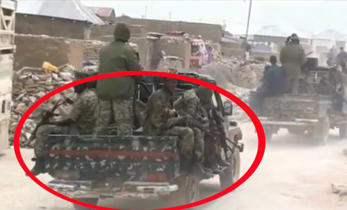

khatumo.net archive
Tragedy in Taleh: Puntland forces massacre dozens of Khatumo civilians
By A. Hindi
November 29, 2013
Puntland forces attack the Historical city of Taleh
At least 12 people have been reported dead in Taleh City today’s as Puntland Security Forces went into a firing spree in and around the areas of Khatumo administration’s landmarks such as the Sayid Mohamed A. Hassan Airport, the famous Fig-Tree (Berdaha Khatumo) garden, and the office of President Mohamed J. Indho-sheel
The fighting started around 2:00 pm Taleh time when the Khatumo civil society was planning to hold a peaceful conference to solidify their Khatumo administration established in the same City a year ago. Khatumo State of Somalia is a separate administration formed in last year’s Grand Khatumo 2 Congress of the Sool, Sanaag, Cayn people in the city of Taleh. All 13 Traditional Graads and more than 65 Caqils along with 6000 civil society participants have unanimously declared their formal separation from Puntland and Somaliland.
These clashes come amid recent visits to Puntland region by the head of UNSOM Nicholas Kay who did not acknowledge Khatumo Traditional elders’ message not to participate in Puntland’s upcoming elections_leaving their 17 Puntland MP seats up for grabs. According to a recent communique by the head of Puntland Safeguarding Council (Golaha Badbaadinta Puntland), Mohamed Elmi Abdille_they have, on numerous occasions, told the visiting European delegations including the Italian Ambassador that the people of SSC have formed their own Khatumo administration. However, UNSOM officials were willfully blind to this reality in the region specially Nicholas Kay who seemed to have given the current Puntland administration the clearance to re-gain those 17 seats” said Mohamed Elmi. “It is a matter of political survival for President Farole and his VP Abdisamed to keep those favourable 17 seats filled by hand picked illegal representatives from SSC region, hence the destruction of Khatumo 3 conference by any means necessary” concluded Mr. Abdulle.

Puntland Security Forces that Attacked Khatumo’s Taleh city
Meanwhile, earlier around 8:00 a.m, Upon the news that Puntland forces equipped with more than 45 (Technic o ) heavy tanks and machinery were coming to attack the people of Taleh, President of Khatumo Administration has left the city in order to avoid any clashes. However, Puntland Security Forces went into a rampage, killing civilians who were mostly youth and elders suspected of participating in the on-going Khatumo 3 conference. It is not clear how many were injured or other damages caused by the heavy artillery used by Puntland forces.
“Khatumo administration condemns these barbaric atrocities and It is unfortunate that Puntland has begun a new war in the region” stated Mukhtar Habashi, Khatumo administraton’s chief of staff. “Khatumo People are committed to exercise their inalienable right to freedom of assembly and we will defend our people and our land” continued Mukhtar.
If the above allegations by Puntland Safeguarding Council are proven, then it will be the first time that a United Nations body assigned to keep the peace in Somalia’s fragile provinces has actually helped to start a new war in Northeastern Somalia. To this end, Khatumo Administration intends to seek international legal advice on the Tragedy in Taleh; bringing to justice ALL those who were involved in committing these heinous crimes against Humanity.
A. Hindi
admin@khatumo.net
This article may not be copied or reproduced without the written consent of www.khatumo.net except if you are a member of Khatumo Journalists Association (KHAJA) in which case you have full permission.